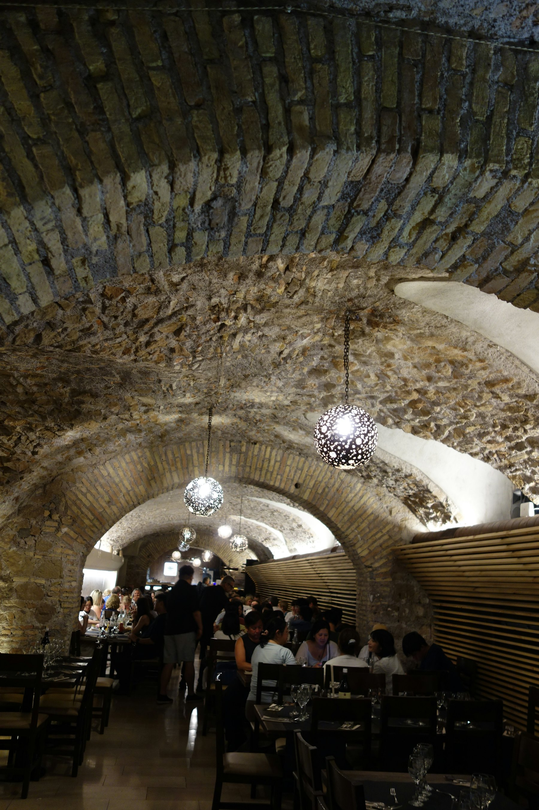

En spannmålskällare med en eld i
Hur ett förråd från 1888 blev ett kök, och var maten kommer ifrån.


Rummet byggdes för att hålla sig kallt
En spannmålshandlare lät hugga ut källaren i berget 1888. Meterstjocka granitväggar, tre tegelvalv, en lucka mot gatan. Under kriget förvarade kvarteret sin potatis där. På 1990-talet stod cyklarna där.
När vi öppnade den 2023 behöll vi allt som fanns där och lade till en sak: en eldstad av stål där luckan hade suttit, med en rökkanal som går upp genom det gamla schaktet.

En eld, fyra sätt att laga mat
Elden tänds klockan tre på eftermiddagen och björken brinner tills vi stänger. Fisk och biffar går över lågan. Rotfrukter och lamm ligger i glöden i timmar. Strömming och ost får röken. Några saker möter den aldrig, eftersom rått ibland är bäst.
Det finns ingen gas i köket. När elden är låg får menyn vänta.

Var maten kommer ifrån
Det mesta vi lagar är fångat eller odlat inom en dags bilresa. Vi köper hela djur och hela fiskar, så menyn följer vad var och en ger.
- SaimenSiklöja och gös, med nät
- KvarkenSik och strömming
- ÅlandLamm som betat i ytterskärgården
- RuovesiGräsbetat nötkött
- SibboRotfrukter, rödbetor och äpplen
Kom ner och sätt dig vid elden.
Öppet tisdag till lördag från 17.00. Sex platser vid disken hålls lediga för gäster utan bokning.
Boka bord